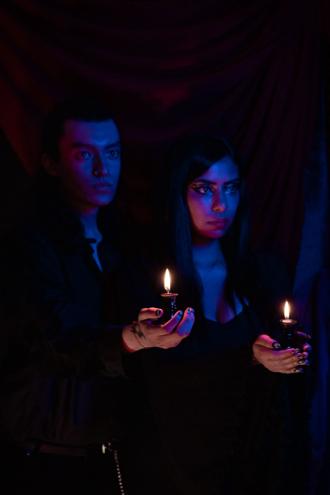
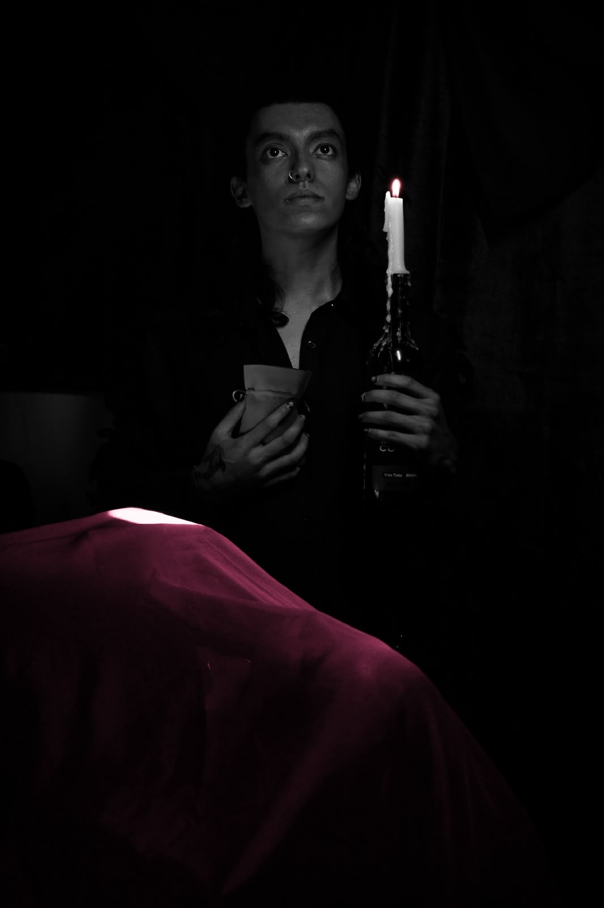
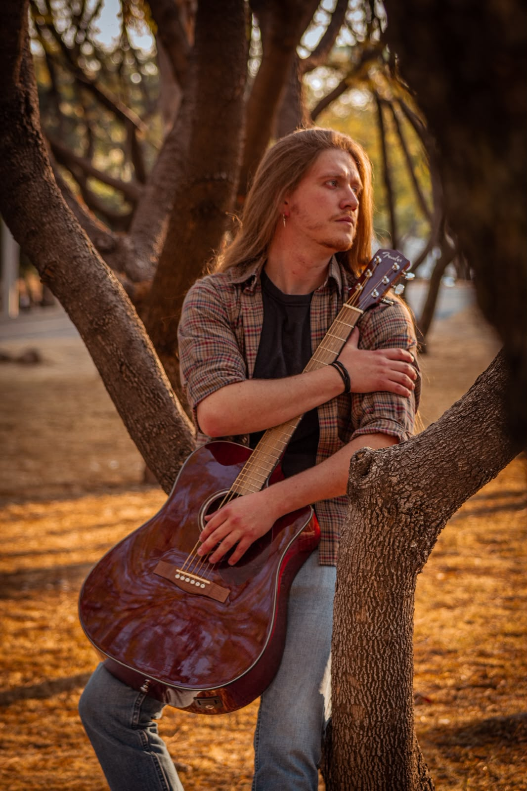
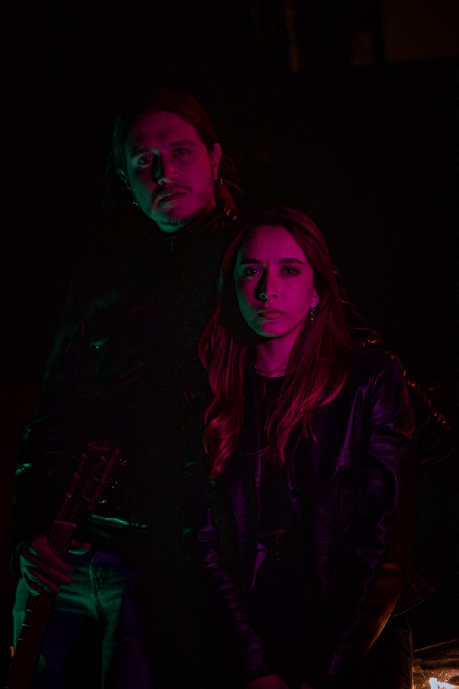
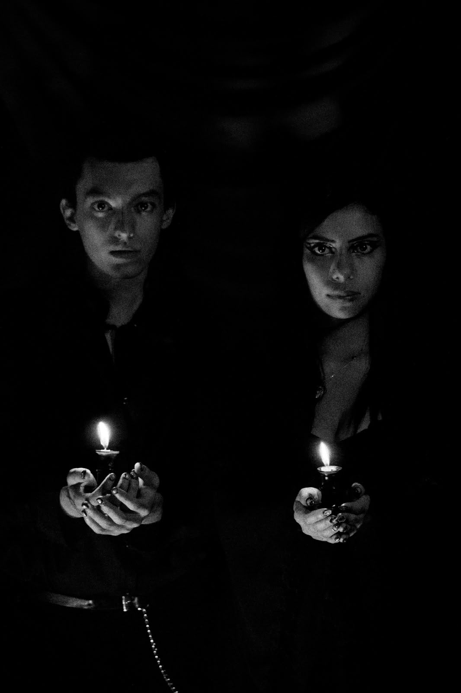

DANIEL CUBAS
MX
Diseño,
fotografía y
dirección visual
Conceptos visuales con identidad, intención y narrativa.
Diseñador y fotógrafo con sensibilidad cinematográfica, enfocado en crear contenido visual, identidad de marca y piezas que conectan concepto, emoción y comunicación. Creatividad, adaptabilidad y experiencia operativa aplicadas a proyectos con visión práctica y personal.
Fotografía·
Diseño gráfico·
Identidad visual·
Contenido para redes·
Dirección de arte
Disponible para proyectos, colaboraciones y desarrollo de marca.
@DanyCub
477 284 3551



DANIEL CUBAS
Dirección visual · Fotografía
Diseño &
fotografía
Ideas que se convierten en imágenes, conceptos y experiencias visuales.
Fotografía·
Diseño gráfico·
Identidad visual·
Contenido para redes·
Dirección de arte
Disponible para proyectos, colaboraciones y desarrollo de marca.
@DanyCub
477 284 3551
DANIEL CUBAS
Diseño
Fotografía
Dirección visual
Conceptos visuales con identidad, intención y narrativa.
Diseñador y fotógrafo con sensibilidad cinematográfica. Desarrolla identidad de marca, contenido visual y piezas que conectan concepto, emoción y comunicación, con una iniciativa propia de playeras en crecimiento.


Dirección de arte

Serie nocturna

Identidad de marca
Fotografía·
Identidad visual·
Contenido para redes·
Dirección de arte
Disponible para proyectos, colaboraciones y desarrollo de marca.
@DanyCub
477 284 3551